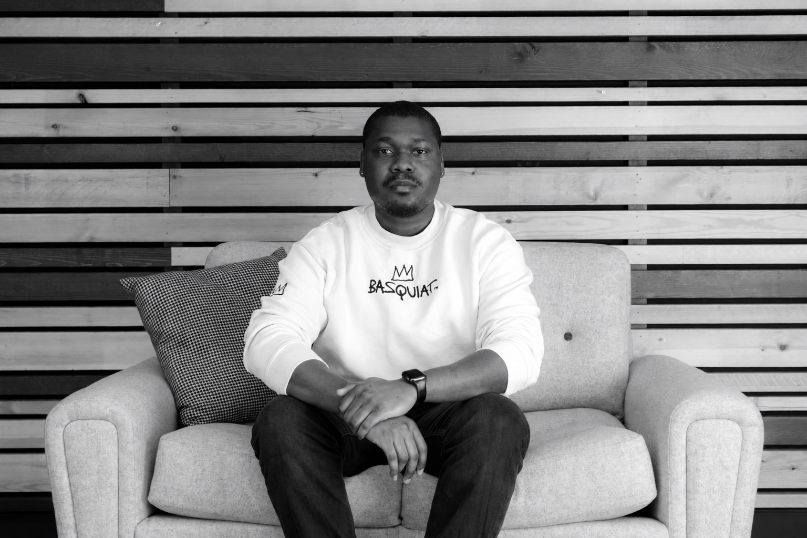

PERSONAL PROJECT / TRY IT YOURSELF
Football Match Lab.
Three World Cup knockout matches. Compare player contributions, switch between totals and per-90 rates, and explore shot zones across match periods.
Open the Match Lab ↗ADETOLA ADELASE / DATA & REPORTING ANALYST
I’m Tola. I turn commercial questions into clearer decisions at Sage, using Power BI, SQL and DAX. Now I’m building towards Data Science.
MSc Data Science and Computational Intelligence
Multiverse Data Fellowship Level 4 · in progress

From football valuations to online experiments. A selection of my independent and academic projects.
Three World Cup knockout matches. Compare player contributions, switch between totals and per-90 rates, and explore shot zones across match periods.
Open the Match Lab ↗Original notebook · historical SoFIFA data
Correlation describes association, not causation.
8,480 players. Four regression approaches. An exploration of what drives FIFA valuations—and why strong-looking results need careful scrutiny.
THE TAKEAWAY A strong association isn’t proof of a reliable prediction.
Read the case study ↗View repository ↗290,584 users · No demonstrated uplift
A conversion experiment with 290,584 analysed users. Comparing conversion rates, testing an uplift hypothesis and explaining why the evidence supports keeping the existing page.
THE TAKEAWAYThe evidence supports keeping the existing page.
Read the case study ↗View repository ↗8,000 titles · LDA / LSA / HDP
Comparing LDA, LSA and HDP on 8,000 Medium titles. Exploring coherence scores, inspecting topic keywords and asking whether the highest score produces the most useful themes.
THE TAKEAWAYThe highest coherence score needs human scrutiny.
Read the case study ↗View repository ↗More explorations: Prosper loan data · WeRateDogs data wrangling · Academic projects retain their original attribution.
Professional analytics experience, supported by personal projects that explore statistical and modelling methods.
SQL · Power BI · DAX · Data modelling
My professional background is in Commercial and Sales Operations analytics. I bring that business context to the questions I investigate.
Python · pandas · NumPy · scikit-learn
My personal projects cover regression, statistical testing, NLP and data preparation. Explore the modelling case study ↗
MSc foundation · Data Fellowship Level 4
My current Data Fellowship Level 4 with Multiverse builds on my postgraduate study, with a focus on applying and strengthening my skills.
I enjoy turning a complicated question into something people can understand and act on.
I work as a Data and Reporting Analyst in Commercial and Sales Operations at Sage. That experience gives me a practical perspective on data: start with the question, understand the context, and make the answer useful.
I hold an MSc in Data Science and Computational Intelligence from Coventry University. My dissertation explored football player valuation using machine learning—a subject that connects my technical interests with my love of football.
I’m now building on that foundation through Multiverse’s Data Fellowship Level 4 as I work towards a Data Science role. This portfolio brings together my personal and academic projects, with a focus on the questions, methods and judgement behind the work.
Beyond data, my interests include football, film, music and writing. Football is also where some of my favourite analytical questions begin.
What question matters, and what can the data tell us?
Explore patterns, compare approaches and challenge assumptions.
Explain the evidence clearly, including its limitations.
Commercial analytics experience, a postgraduate Data Science foundation and continued professional learning.
Sage · Manchester/Newcastle
Developing and maintaining Power BI reporting for Commercial and Sales Operations. Using SQL, DAX and data modelling to prepare and validate data, define consistent measures and communicate performance insights.
Data Fiend Consulting
Data preparation, analytical reporting and communicating findings.
Tek-Experts
A foundation in technical troubleshooting, user support and Microsoft Azure.
Multiverse
Developing my data skills through the Data Fellowship Level 4 alongside my professional analytics work.
Coventry University
Study included machine learning, artificial neural networks, information retrieval, big data and visualisation.
Explore my dissertation project ↗Udacity
Project work spanning data investigation, wrangling, experimentation and visualisation.
See selected projects ↗Bells University of Technology · Nigeria
A technical foundation in computing, data structures and data management.
Liverpool fan. Yoruba boy. A little more of the person behind the projects. Tap a card to explore.
A Liverpool fan with a love for the game—and the questions hiding behind the scoreline.
Explore my Match Lab ↗Nigerian. Yoruba. Based in Greater Manchester. My roots are part of the perspective I bring to everything I do.
Movies, music, art and anime. There’s always room for a good story, a good soundtrack and a little soft life.
Personal essays on feelings, patterns and the stories we tell ourselves.
Read Soft Musing ↗Soft Musing by Tola. Personal essays on the patterns we notice, the things we feel and the stories we tell ourselves. Writing as axerhitta.
Noticing a pattern is only the beginning. A reflection on what analysing data can teach us about checking our assumptions with people, too.
02 / EMOTION & EXPRESSIONOn the distance between what happens inside us and what other people see—and the quiet ways we try to bridge it.
Interested in Data Science opportunities, my projects or football analytics?
You can find me here—or read my writing on Substack.